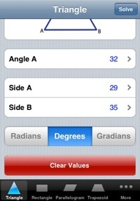
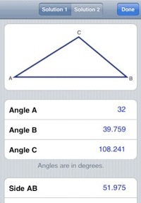
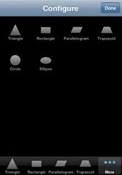
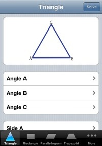
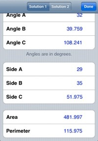
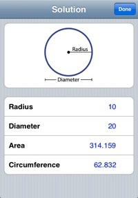

Easy to use
TrigSolv makes solving geometry easy by only showing what measures you need to enter. For example: If you enter two angles when solving a triangle, TrigSolv can figure out the third angle, so that field is hidden. This lets you quickly see what more you need to give in order to solve the figure. When there are no blank fields left, you're ready to solve.
Visual Display
Once a figure is solved, TrigSolv shows an exact scale picture of it so you know what it looks like.
Many Shapes
TrigSolv is able to solve all of the main geometric figures including:
- triangles
- trapezoids
- parallelograms
- rectangles
- ellipses
- circles
Screenshots
  History
-
Version 1.0
- First release
-
Version 1.1
- TrigSolv now draws solved figures to scale
- Bug fixes
-
Version 1.2
- Improved drawing performance
- Bug fixes